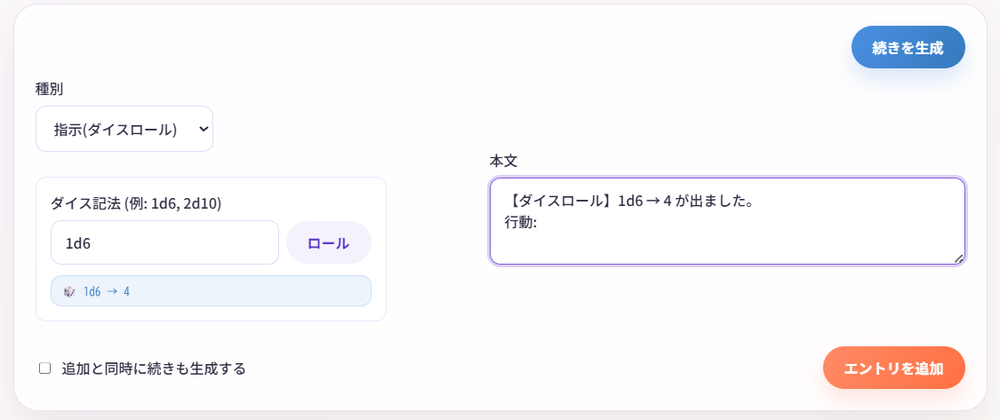

ダイスロール機能
Narrative Conversationには、ダイスロール機能が搭載されています。
TRPG風に運要素を取り入れて、物語を楽しむことができます。
ダイスロールとは？
ダイスロールは、サイコロを振って出た目で行動の成否を決める、TRPGでおなじみのシステムです。
例えば： - 「魔法が成功するかどうか、1d20で判定」 - 「敵の攻撃をかわせるか、2d6で判定」
このように、ランダム要素を物語に取り入れることができます。
AIゲームマスターをさせている時にダイスロールを使うと、よりTRPGらしい体験ができます。
基本的な使い方
ステップ1: ダイスロールエントリを追加
- 画面右下の種別から 「指示(ダイスロール)」 を選択

- ダイスロール画面が表示されます
ステップ2: ダイス記法を入力
ダイス記法を入力します。

例：
- 1d6 - 6面サイコロを1つ振る
- 2d10 - 10面サイコロを2つ振る
- 3d20 - 20面サイコロを3つ振る
ステップ3: 実行
「ロール」 ボタンをクリックすると、結果が指示の本文に追加されます。
例：
編集したあと、 「エントリを追加」 ボタンをクリックしてエントリを保存します。
ダイスロールはエントリとして保存される
ダイスロールの結果は、他のエントリと同様に保存されます。後から編集・削除も可能です。
何度も振るとどんどん追記されていきます。
追加する前に書き換えたり、何度も振り直すことも可能です。

TRPG風に遊ぶ
Narrative Conversationを、一人TRPGのように遊ぶこともできます。
システムプロンプト
あなたはTRPGのゲームマスター（GM）です。
プレイヤーの行動に対して、状況を描写してください。
判定としてダイスロールを要求してください。
ダイスロールの結果に基づいて、行動の成否を判定してください。
ユーザーが提供するキャラクターの名前、性格、設定に基づいて、魅力的な物語を作成してください。
物語は短い地の文と対話の形式で進行します。
世界観やキャラクター情報を参照し、魅力的なゲームを進行してください。
GMは、物語とアリス(NPC)を担当します。
プレイヤー(PC)は「ボブ」です。
司令
ゲーム進行だけをしたい場合は
ロールプレイを楽しみたい場合は
※ロールプレイ中も、指示で「GM、キャロルに何が起きたのかを説明してもらえますか？」と入れると代わりに進行してくれたりします。
よくある質問
Q. AIがダイス結果を無視します
A. 以下を試してください：
- 司令やシステムプロンプトで明示的に「ダイスロールの結果を反映してください」と指示
- ダイスロールの直後に「指示」エントリで結果を説明
- システムプロンプトに「ダイスロールを尊重してください」と追加
Q. もっと複雑なダイスロールはできませんか？
A. 現在は NdM 形式のみ対応しています。
2d6+3（修正値付き）などは、手動で計算してください。
Q. ダイスロールなしで遊ぶことはできますか？
A. もちろんです！
ダイスロールはオプション機能なので、使わなくても問題ありません。
まとめ
ダイスロール機能を使うと：
- 運要素を取り入れて、物語が予測不能に
- TRPG風の遊び方ができる
- 判定システムで、物語にメリハリが生まれる
慣れてきたら、独自のルールを作って楽しむのもおすすめです！